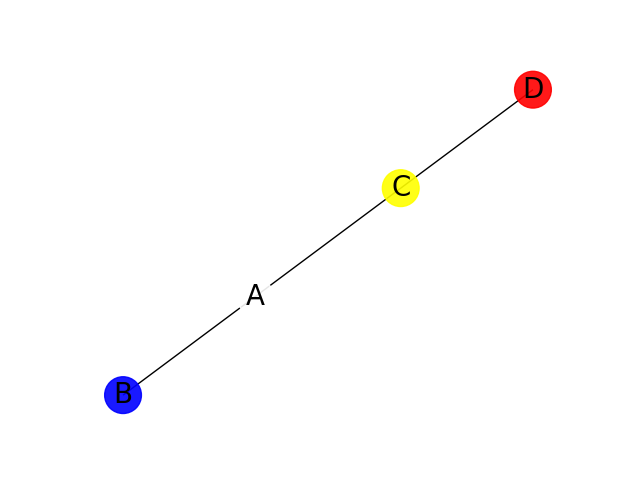
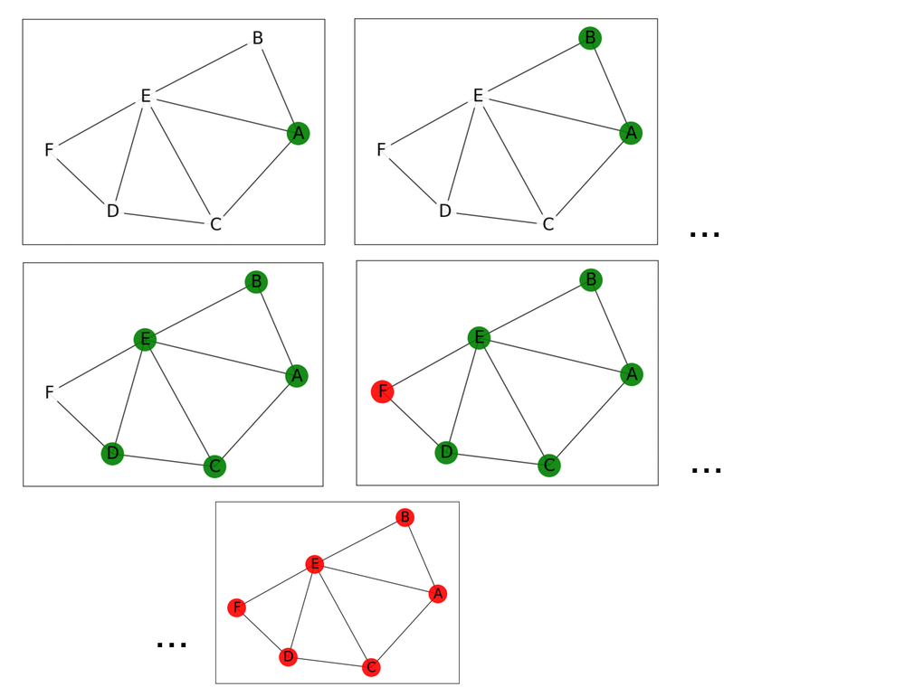

Avec la librairie networkx, le graphe G est un objet de la classe nx.Graph
Il se manipule avec l’attribut nodes et les méthodes de classe add_node, et add_edge.
Voici un exemple de graphe avec 4 noeuds, numérotés de 0 à 3:

importmatplotlib.pyplotaspltimportnetworkxasnxfromnumpyimportarrayG=nx.Graph()# definition des noeudsG.add_node(0,label='A',col='white')G.add_node(1,label='B',col='blue')G.add_node(2,label='C',col='yellow')G.add_node(3,label='D',col='red')# definition des aretesG.add_edge(0,1)G.add_edge(0,2)G.add_edge(2,3)
structures de données
Pour faciliter l’interaction avec les données du graphe, on créé de nouvelles structures de données:
pos, utile pour le tracé
edge_color: list
colorNodes: list
label_nodes: dict
# calcul des positions pour repartir les sommets du graphepos=nx.spring_layout(G)# sommets et couleur des sommetsL=list(G.nodes())edge_color=list(G.nodes(data='col'))colorNodes=[node[1]fornodeinedge_color]# Afficher les etiquettes: labelslabels_nodes={node:labelfornode,labelinG.nodes(data='label')}
Question a: Explorer chacune des séquences L, edge_color, colorNodes et labels_nodes et recopier leur valeur.
Dessiner
Le script suivant va dessiner le graphe à partir de l’objet G.
astuce: prévoir un parcours par indice for node in range(len(liste_adjacence))
Question f: Créer une fonction degre_max qui retourne un tuple constitué du noeud de plus haut degré, et de la valeur de plus haut degré dans le graphe. Cette fonction prend pour unique paramètre le dictionnaire D défini plus haut.
defdegre_max(D):...
astuce: rappelez vous l’algorithme de recherche du max dans une liste, puis adaptez ce script pour le dictionnaire D. Ici, la valeur qui doit être maximale, c’est len(D[node]), où node est une clé du dictionnaire D
Question g: L’instruction suivante génère un affichage des caractéristiques du graphe.
for node in list(G.nodes()):
print(node,'->',list(nx.neighbors(G,node)),G.nodes(data='col')[node])
0 -> [1, 2] white
1 -> [0] blue
2 -> [0, 3] yellow
3 -> [2] red
Obtenez le même affichage, mais cette fois en utilisant les séquences construites plus haut: L, edge_color, colorNodes, labels_nodes et D.
fornodeinL:print(node,'->',...,...
Compléments
Caractéristiques du graphe - librairie networkx
L’objet grapheG possède des méthodes de type Getter et Setter. Nous allons explorer celles-ci.
Fonctions utiles de networkx
Pour connaitre la liste des sommets et des arêtes:
La page suivante du site marcarea.com propose plusieurs implémentations pour les parcours en largeur et en profondeur d’un graphe.
Pour utiliser l’une de ces fonctions, il faudra une structure de données de type dictionnaire pour le graphe: revoir le paragraphe Fonctions utiles de networkx.
Ajouter une fonction pour dessiner et sauvegarder le graphe dans un fichier:
Adapter ensuite la fonction de recherche pour tracer les graphes au fur et à mesure du parcours. Démarrer du sommet 0:
plt.figure()# utile pour afficher TOUS les graphesrecursive_dfs(D,0)

Correction
importmatplotlib.pyplotaspltimportnetworkxasnxfromnumpyimportarraydefinverse(L):return[L[i]foriinrange(len(L)-1,-1,-1)]defdessine(G,filename):plt.clf()L=list(G.nodes(data='col'))colorNodes=[node[1]fornodeinL]nx.draw_networkx_nodes(G,pos,node_size=700,node_color=colorNodes,alpha=0.9)# labelslabels_nodes={node:labelfornode,labelinG.nodes(data='label')}nx.draw_networkx_labels(G,pos,labels=labels_nodes, \
font_size=20, \
font_color='black', \
font_family='sans-serif')nx.draw_networkx_edges(G,pos)plt.savefig(filename)G=nx.Graph()# definition des noeudsG.add_node(0,label='A',col='white')G.add_node(1,label='B',col='white')G.add_node(2,label='C',col='white')G.add_node(3,label='D',col='white')G.add_node(4,label='E',col='white')G.add_node(5,label='F',col='white')# definition des aretesG.add_edge(0,1)G.add_edge(0,2)G.add_edge(0,4)G.add_edge(4,1)G.add_edge(4,2)G.add_edge(4,3)G.add_edge(2,3)G.add_edge(4,5)G.add_edge(3,5)# calcul des positions pour repartir les sommets du graphepos=nx.spring_layout(G)# Dictionnaire du grapheD={}fornodeinlist(G.nodes()):D[node]=list(nx.neighbors(G,node))print(D)# Parcours en profondeur avec coloration des sommetsdefdfs(graph,node,visited=None,stack=None):compteur_image=0ifvisitedisNone:visited=[]ifstackisNone:stack=[]stack.append(node)nx.set_node_attributes(G,{node:{"col":'green'}})dessine(G,'img/figure'+str(compteur_image)+'.png')compteur_image+=1whilestack:node=stack.pop()ifnodenotinvisited:#and G.nodes()[node]['col'] != 'red':visited.append(node)#plt.show()unvisited=[nforningraph[node]ifnnotinvisited]stack.extend(inverse(unvisited))forninunvisited:nx.set_node_attributes(G,{n:{"col":'green'}})dessine(G,'img/figure'+str(compteur_image)+'.png')compteur_image+=1nx.set_node_attributes(G,{node:{"col":'red'}})dessine(G,'img/figure'+str(compteur_image)+'.png')compteur_image+=1#plt.show()returnvisited# appel de dfs depuis le sommet 0 et affichage graphique#plt.figure()visited=dfs(D,0)print(visited)